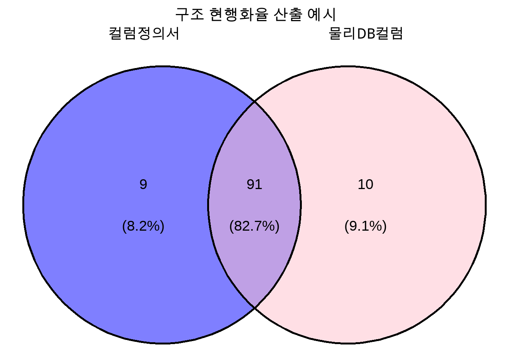

classDiagram
표준_table <|-- table1
표준_table <|-- table2
표준_table <|-- table3
표준_table : 성명
표준_table : 성별
표준_table : 주소
표준_table : 전화번호
class table1{
이름
남여구분
집주소
연락처
}
class table2{
성함
성별
주소지
휴대번호
}
class table3{
성명
성별
주소
전화번호
}
공공데이터 품질관리 프로젝트
공공데이터
데이터 품질관리
공공데이터 품질관리에 대한 개념과 제가 경험한 평가 대응 방법을 공유합니다.
2023년 7월, 전라북도 공공데이터 품질관리 용역를 수행했습니다. 결론적으로 중요 지표였던 공공데이터 품질관리 수준평가 96점을 달성하여 전라북도청 평가점수 최고점을 갱신했습니다. 데이터 표준화와 데이터 품질관리에 대한 실무를 접할 수 있는 사업이었습니다.
품질관리 수준평가란?
정부에서는 매년 공공데이터법 제9조에 근거하여 공공데이터 개방, 활용, 품질 및 관리체계 등 공공데이터 제공 및 운영에 관한 실태를 파악하고 개선하기 위해 공공데이터 제공 운영실태 평가를 실시하고 있습니다.
공공데이터 품질관리 수준평가는 공공데이터 제공 운영실태 평가 중 35점을 반영합니다.
| 평가영역 | 배점(광역 기관 기준) |
|---|---|
| 관리체계 | 7 |
| 개방 | 35 |
| 활용 | 23 |
| 공공데이터 품질관리 수준 평가 | 35 |
| 기타 | -1/건당 |
품질관리 수준평가는 공공기관이 관리하는 데이터가 일정 수준의 품질을 확보할 수 있도록 데이터 관리체계를 잘 갖추고 데이터 품질수준을 파악하기 위해 실시하고 있습니다.
| 번호 | 지표 | 배점 |
|---|---|---|
| 1 | 품질진단 절차 별 일정 준수 | 2 |
| 2 | 품질관리 계획수립 | 2 |
| 3 | 예방적 품질관리 진단 | 12 |
| 4 | 데이터 표준 확산 | 10 |
| 5 | 데이터 구조 안정화 | 6 |
| 6 | 데이터 연계관리 | 8 |
| 7 | 데이터 품질진단 | 20 |
| 8 | 품질진단 결과조치 | 20 |
| 9 | 데이터 오류율 | 14 |
| 10 | 오류신고 요구사항 분석 및 개선 | 4 |
| 11 | 개방 데이터 품질수준 | 2 |
| 가점 지표 1 | 예방적품질관리 진단 및 주요DB 품질진단 컨설팅 | 2 |
| 가점 지표 2 | 대상 DB 35개 초과 선정 및 진단 | 3 |
위 지표 중 4~9번 지표는 기관에서 관리하는 정보시스템에 대한 DB의 품질을 평가하는데 목적이 있으며 평가에 대응하기 위해서는 데이터 표준화와 데이터 품질관리에 대한 이해가 필요합니다.
데이터 표준화
데이터 표준화에 대한 내용은 구글링을 통해 쉽게 찾아낼 수 있습니다. 정확한 개념과 이론을 이해하기 위해서는 다음 페이지가 가장 도움이 됩니다.
Data on-air DA 가이드 : 데이터 표준화에 대한 개념과 일반적인 데이터 표준화 프로세스를 알 수 있습니다.
공공데이터베이스 표준화 관리 매뉴얼 : 공공데이터에 대한 표준화 관리 방법을 알 수 있습니다.
Data on-air DA 가이드-데이터 표준화 개념에 따르면, 데이터 표준화는 시스템별로 산재해 있는 데이터 정보 요소에 대한 명칭, 정의, 형식, 규칙에 대한 원칙을 수립하여 이를 전사적으로 적용하는 것으로 정의하고 있습니다.
DB를 예로 들면 테이블을 생성할 때 다음과 같은 SQL을 통해 생성합니다.
create table 테이블명 (
컬럼명1 데이터유형1 제약조건1,
컬럼명2 데이터유형2 제약조건2,
...
);이때 임의로 컬럼명, 데이터유형, 제약조건을 정하지 않고 기업/기관에서 관리하고 있는 표준에 따라 정해야 합니다. 이를 통해 동일한 의미를 갖지만 다른 컬럼명을 쓰거나 동일한 컬럼명을 쓰지만 다른 의미로 사용되는 경우를 방지할 수가 있습니다.
즉, 표준화란 서로 다른 명칭과 유형을 가진 동일한 대상을 하나의 명칭과 유형으로 통일하는 것으로 볼 수 있습니다.
데이터 표준화가 필요한 이유
| 데이터 표준화 미적용 | 데이터 표준화 적용 |
|---|---|
|
|
|
|
|
|
|
|
데이터 표준 구성요소
표준 관리 체계에 따라 컬럼을 만들하기 위해서는 먼저 표준 사전을 정의해야 합니다. 표준 사전은 단어, 도메인, 코드, 용어로 구성 되어 있습니다.
Note
- 아래 설명은 공공데이터 표준 관리 체계 기준으로 작성했습니다.
-
세부적인 내용은 기업마다 상이할 수 있습니다.
표준 단어
업무상 사용하는 일정한 의미를 갖는 최소 단위을 의미합니다.
| 표준단어명 | 단어영문약어명 | 단어영문명 | 형식단어여부 | 도메인분류명 |
|---|---|---|---|---|
| IP | IP | Internet Protocol | N | |
| 주소 | ADDR | Address | Y | 주소 |
| 가맹점 | FRCS | Franchise | N | |
| 명 | NM | Name | Y | 명 |
| 법정동 | STDG | Statutory Dong | N | |
| 시도 | CTPV | Cities And Provinces | N | |
| 코드 | CD | Code | Y | 코드 |
표준 도메인
업무적인 용도, 사용 빈도와 데이터의 물리적인 특성 등을 고려하여 도메인을 분류하고 데이터 타입，길이 등을 표준화하여 표준 도메인을 정의합니다.
도메인명은 표준단어로 만들어지며 마지막 단어는 형식단어가 들어가야 합니다.
| 도메인분류 | 도메인명 | 데이터타입 | 데이터길이 |
|---|---|---|---|
| 주소 | 주소V15 | VARCHAR | 15 |
| 명 | 명V200 | VARCHAR | 200 |
| 코드 | 코드C2 | CHAR | 2 |
표준 용어
표준 단어, 표준 도메인을 활용하여 용어를 정의합니다. 정의된 용어는 컬럼을 생성할 때 사용됩니다.
표준용어명은 표준단어의 조합으로 만들어지며 마지막 단어는 형식단어가 들어가야 합니다. 일반적으로 도메인명을 용어 끝에 붙여서 사용합니다.
ex) 법정동시도코드(STDG_CTPV_CD) = 법정동(STDG) + 시도(CTPV) + 코드(CD)
| 표준용어명 | 영문약어명 | 표준도메인명 |
|---|---|---|
| IP주소 | IP_ADDR | 주소V15 |
| 가맹점명 | FRCS_NM | 명V200 |
| 법정동시도코드 | STDG_CTPV_CD | 코드C2 |
표준 코드
업무에서 사용되거나 필요한 모든 코드를 수집하여 통합한 사전입니다. 코드성 컬럼의 값은 표준 코드에 있는 코드값을 사용하도록 규정합니다.
표준용어명은 표준단어의 조합으로 만들어지며 마지막 단어는 코드 도메인을 갖는 형식단어가 들어가야합니다.
| 한글코드명 | 영문코드명 | 코드값 | 코드값의미 |
|---|---|---|---|
| 법정동시도코드 | STDG_CTPV_CD | 11 | 서울특별시 |
| 법정동시도코드 | STDG_CTPV_CD | 51 | 강원특별자치도 |
| 법정동시도코드 | STDG_CTPV_CD | 41 | 경기도 |
데이터 품질관리
양질의 데이터를 확보하기 위해서는 지속적인 데이터 품질관리 활동이 필요합니다. 품질관리 활동에는 표준화, 모델링, 데이터 값, 데이터 활용에 대한 관리가 있으며 데이터 품질을 측정하기 위한 지표가 있습니다.
DB에 대한 공공데이터 품질관리 지표는 표준, 구조, 값, 연계 진단으로 이뤄져있습니다. 이를 통해 데이터에 대한 품질을 측정하고 오류 데이터를 발견하여 데이터 품질을 개선하고 있습니다.
표준 진단
표준 진단은 DB 내 컬럼 중 표준 용어가 적용된 비율을 지표로 정하고 진단을 수행하게 됩니다.
표준을 적용한 컬럼이라는 것은 세부적으로 다음을 의미합니다.
물리컬럼명이 표준용어 영문약어명과 일치
컬럼에 정의된 도메인(데이터 형식, 데이터 길이 등)이 표준용어과 표준도메인에 정의된 사항과 일치
전체 컬럼의 개수 중 표준이 적용된 표준의 개수를 비율을 계산하면 표준적용율이 산출됩니다.
\[ 표준적용률(\%) = \frac{표준이\ 적용된\ 컬럼\ 개수}{전체\ 컬럼\ 개수} \times 100 \]
구조 진단
구조 진단은 테이블정의서 및 컬럼정의서가 물리 DB 구조와 일치하는지 확인하는 진단입니다. 공공데이터 품질관리 수준평가에서는 4가지 종류의 현행화율을 산정하여 가장 낮은 현행화율을 점수에 반영합니다.
Warning: Using `size` aesthetic for lines was deprecated in ggplot2 3.4.0.
ℹ Please use `linewidth` instead.
ℹ The deprecated feature was likely used in the ggvenn package.
Please report the issue to the authors.
테이블현행화율(%) = \(\frac{n(테이블\ 정의서 \cap 물리\ DB\ 테이블)}{n(물리\ DB\ 테이블)} \times 100\)
테이블정의서현행화율(%) = \(\frac{n(테이블\ 정의서 \cap 물리\ DB\ 테이블)}{n(테이블\ 정의서)} \times 100\)
컬럼현행화율(%) = \(\frac{n(컬럼\ 정의서 \cap 물리\ DB\ 컬럼)}{n(물리\ DB\ 컬럼)} \times 100\)
컬럼정의서현행화율(%) = \(\frac{n(컬럼\ 정의서 \cap 물리\ DB\ 컬럼)}{n(컬럼\ 정의서)} \times 100\)
값 진단
값 진단은 정해진 진단룰에 따라 데이터의 값을 확인하여 데이터 오류율을 진단합니다. 공공데이터에서는 범정부 진단 기준, 업무규칙을 정하여 진단룰을 설정하도록 되어 있습니다.
| 순번 | 진단기준 | 진단내용 |
|---|---|---|
| 1 | 시간순서 일관성 | 시간순서 관계를 갖는 컬럼 간의 데이터 오류 측정 |
| 2 | 선후관계 정확성 | 선후관계를 가지는 컬럼 간의 데이터 오류 측정 |
| 3 | 컬럼 간 논리관계 일관성 | 컬럼 간 논리적 일관성 오류를 측정 |
| 4 | 계산식 | 계산 값이 정확하게 관리되고 있는지 측정 |
| 5 | 참조관계 | 참조하는 컬럼과 참조되는 컬럼 사이의 일관성을 유지하고 있는지 측정 |
| 6 | 글자깨짐 | 데이터 값에 깨진 글자 또는 완성된 한글이 아닌 오류 데이터가 입력되었는지 측정 |
| 7 | 공백, 특수문자 | 데이터 값에 불필요한 공백과 특수문자가 입력되었는지 측정 |
| 8 | 필수값 | 데이터의 특성 상 반드시 입력되어야 하는 값이 누락없이 입력되었는지 측정 |
| 9 | 중복데이터 | DB 내 두 개 이상 테이블(또는 파일)에 존재하는 동일한(중복) 데이터의 값 일치 여부 측정 |
| 10 | 날짜 도메인 | 날짜 데이터 값이 유효한 범위를 벗어나거나 표준 형식을 위배하였는지 측정 |
| 11 | 번호 도메인 | 번호생성 규칙을 위배하였는지 측정 |
| 12 | 여부 도메인 | 컬럼에 저장된 값이 유효 값(표준으로 정의한 여부 값)으로 일관되게 적용되고 있는지 측정 |
| 13 | 코드 도메인 | 표준으로 정의한 코드 값으로 일관되게 적용되고 있는지 측정 |
| 14 | 금액 도메인 | 금액 데이터 이외 문자가 입력되어 있는 컬럼의 데이터 오류 측정 |
| 15 | 수량 도메인 | 수량 데이터 이외 문자가 입력되어 있는 컬럼의 데이터 오류 측정 |
| 16 | 율 도메인 | 율 데이터 이외 문자가 입력되어 있는 컬럼의 데이터 오류 측정 |
| 업무규칙설명 | 대상 전체건수 SQL | 오류 데이터 추출 SQL |
|---|---|---|
| 시작일은 종료일보다 빠를 수 없다. | select count(*) from table |
|
연계 진단
정보시스템(DB)에는 여러 기관과 연계되어 데이터를 송수신하는 경우가 있습니다. 이 경우 연계 데이터의 목록을 정의하고 송수신 내역을 주기적으로 점검하여 관련 산출물을 남겨야 합니다.
프로젝트 간 문제 해결
데이터 품질관리에 대한 개념과 품질진단 툴(DA#, WDQ 등) 활용법만 읽어 보면 쉽게 끝날 수 있는 프로젝트로 보이지만 실무를 하다보니 여러가지 어려움이 있었습니다.
표준이 없었던 정보시스템(DB)에 대한 표준 사전 정의
평가를 진행했던 DB 23개 중 대부분이 범정부 표준이 제정되기 이전에 구축되었기 때문에 표준이 적용되지 않은 상태였습니다. 만점을 얻기 위해서는 표준적용률 90% 이상을 달성해야하기 때문에 DB내 컬럼을 표준용어로 등록 후 표준도메인, 표준코드, 표준단어를 만들어야 하는 과정이 필요했습니다.
flowchart LR
A(DB 내 컬럼) --> B[표준 용어]
B --> C[표준 도메인]
B --> D[표준 코드]
B --> E[표준 단어]
정의된 표준 용어로부터 표준 도메인, 표준 코드, 표준 단어를 만들어 내는 과정은 정해진 규칙에 따라 만들면 되기 때문에 어렵지 않습니다. 하지만 컬럼명에서 표준용어를 만들기 위해서는 각 컬럼명을 확인하여 적절한 도메인 분류명을 정의해줘야 했습니다. 평균적으로 DB 1개 당 등록해야할 표준 용어가 200개 정도라고 한다면 23개 DB를 모두 정의해줘야 했으므로 4600개의 도메인 분류명을 정의해야 했습니다.
| 표준용어명 | 영문약어명 | 표준도메인명 |
|---|---|---|
| IP주소 | IP_ADDR | {적절한 도메인명}V15 |
| 가맹점명 | FRCS_NM | {적절한 도메인명}V200 |
| 법정동시도코드 | STDG_CTPV_CD | {적절한 도메인명}C2 |
수작업으로 컬럼명을 확인하고 분류명을 정하는 작업은 시간이 오래 걸리는 단순 반복 작업입니다. 이를 해결하기 위해 chat gpt API를 활용하여 도메인 분류 모델을 만들었습니다.
flowchart LR
A[표준 용어] -->|chat gpt API| B[도메인 분류명]
컬럼명은 같지만 도메인이 다른 경우
표준 등록만으로 표준적용율을 올릴 수 없는 경우가 있습니다. DB내 정의된 물리컬럼명은 같지만 정의된 도메인이 다른 경우 입니다. 표준 용어 사전에는 하나의 영문약어명만 등록될 수 있기 때문에 여러 도메인을 가진 동일한 물리컬럼명의 경우 하나의 도메인만 표준을 적용한 것으로 측정됩니다.
| 테이블명 | 물리컬럼명 | 데이터 타입 | 데이터 길이 |
|---|---|---|---|
| table1 | colname | char | 10 |
| table2 | colname | varchar | 200 |
| table3 | colname | varchar | 100 |
| table4 | colname | varchar | 100 |
이 경우 정보시스템 유지보수 담당자와 미팅을 통해 물리컬럼명이나 도메인이 변경이 가능한 지 확인 후 불가능하다면 가장 많이 사용한 도메인을 표준용어의 도메인으로 등록하여 진단을 수행했습니다.
프로파일링을 통한 업무규칙 생성
공공데이터 품질관리 수준평가에서는 진단 대상 컬럼에 대해 진단룰을 설정해야합니다. 이를 위해 프로파일링이라는 과정을 통해 진단룰을 도출해야 합니다.
프로파일링이란 실제 데이터의 통계 및 패턴 분석을 통해 오류가 추정되는 데이터를 찾아내는 기법입니다.
raw 단계부터 데이터 분석을 수행하다 보면 데이터에 대한 특성 파악, 전처리에 시간이 많이 들곤 합니다. 만약 데이터 표준화와 데이터 품질관리가 잘 갖춰진 데이터라면 이 부분에 대한 시간이 많이 줄어들 수 있을 것으로 예상이 됩니다. 그 이유는,
- 현행화된 메타데이터를 통해 데이터 특성을 쉽게 파악할 수 있습니다.
- 표준화된 데이터이기 때문에 데이터 결합 과정이 수월합니다.
- 데이터 품질관리 과정을 통해 산출된 지표를 통해 데이터 품질수준을 파악할 수 있고 고품질 데이터를 확보할 수 있습니다.
- 전처리 과정에서 필요한 결측치, 이상치 도출에 대한 힌트를 얻을 수 있습니다.
이 외에도 많은 장점이 있을 것입니다. OECD가 실시한 2023 공공데이터 평가에서 대한민국이 1위를 달성했고 공공데이터 포털 및 여러 플랫폼을 통해서 활용 가능성이 높은 데이터들이 많이 개방된 상태입니다. 앞으로도 공공데이터가 많은 가치를 창출할 수 있는 데이터로 발전할 것으로 기대가 됩니다.